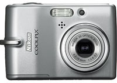
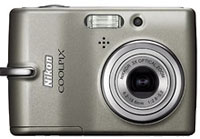
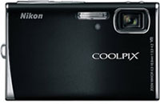
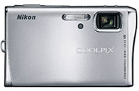

Coolpix Rebranding
The Coolpix Brand
Today Nikon has re-branded the Coolpix range of cameras. After 10 years of Coolpixes, a new more premium logo has been revealed to hi-light the more elegant curves of the newer designs. The old logo had a serif font and looked more technical which gave more emphasis on the technology inside the cameras instead on the outside of the package.
Coolpix L10/L11
Next to the new logo, also 6 new cameras have been announced. It starts with two low budget cams, the Coolpix L10/11 and L12. The difference is 5 or 6 mpix and 2 or 2.4 inch LCD displays. The cameras can be obtained in silver, black and titanium.


Coolpix L12
The next model in the range is the Coolpix L12. This is the first Nikon budget cam with Vibration Reduction in the body and ISO up to 1600. These two features allow for low light shooting without flash or freezing a shot. It sports a small sensor with 7.1mpix. Next to the hardware this camera has the usual Nikon firmware features like Face detection, D-Lighting and Red-eye fix.
Coolpix S50/S50c
Next to the beginners low cost models,there are also a few more advanced camera’s in the ‘style’ series. The Coolpixes S50 and S50c. Very compact cameras with 7.2mpix and a mega 3inch LCD. Also included ion the package is Vibration Reduction. The ‘c’ version offers additional wifi which enables you to transfer the images wireless to Picture Project.


Coolpix S200
Ok, the numbers go higher and higher. Next model is the Coolpix S200. This looks very similar in style to my FujiFilm F11. It has a nice metal body but 7 instead of 6 mpix and 3x zoom lens. It also has the — nowadays very popular marketing feature called — Electronic Vibration Reduction or e-VR. My F11 has this also but better as its ISO goes up to 1600 instead of the max ISO 1000 of the S200. According to the brochure, e-VR is more then just hi ISO performance. It is said that by using data from the built-in angular velocity sensor, the system applies in-camera image processing to turn blurred images into beautifully sharp results. Ok, hope Phil tests this feature soon!
Coolpix S500
Last new camera in the S-series is the Coolpix S500. This is a more classic looking camera is acclaimed to be the most compact digital camera among its competing models (translation: it is not the smallest camera around). It has the same features as the S200 except with real Vibration Reduction and it doubles the ISO performance up to ISO 2000. Other features include 7.1mpix, 2.5inch LCD and the usual firmware features. The body is metal and can be bought in silver and black, … excuse me “Urban Black”.
Coolpix P5000
Last camera is one in the P(rofessional) series. It is the Coolpix P5000. The camear makes me think of the Coolpix 5400 — this is the camera I wanted to buy but I came home with the Coolpix 5700 instead. I must say that I find the camera appealing (in black and really ugly in black/gray). It has the — now regarded as current high end sensor — 10 mpix sensor. It also has a big dial at the top — to select PSAM and scene modes — instead of flimsy buttons to switch from one mode to the other. It has Vibration Reduction and also an impressing ISO up to 3200. ISO 3200 is only available upto 5mpix images so it might be an interpolation trick by down scaling 10mpix images to 5mpix and getting rid of excessive noise at the same time. If it also has a DSLR sized sensor this is the killer compact camera. It is possible to add convertors to go wide — upto 24mm — and to go really far — 378mm!
Comments
Post a comment
XHTML, CSS, RSS feeds. Powered by Movable Type. Hosted @Home with a domain by hostway.
Use the form below to add your relevant comments, suggestions. Be aware that I reserve the right to edit any raw language, abusive and/or inappropriate comments that's too far off topic or remove it all together.